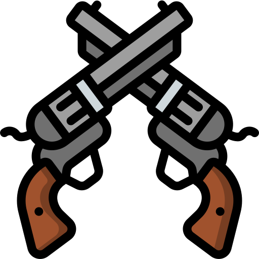
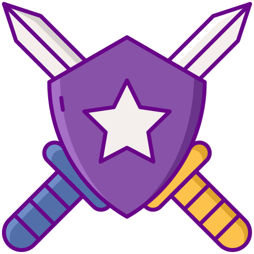

VALORANT
Apa Itu Valorant
Valorant adalah penembak taktis berbasis tim dan penembak orang pertama yang diatur dalam dekat masa depan. Pemain bermain sebagai salah satu dari sekumpulan agen, karakter yang dirancang berdasarkan beberapa negara dan budaya di seluruh dunia. Dalam mode permainan utama, pemain ditugaskan ke tim menyerang atau bertahan dengan masing-masing tim memiliki lima pemain di dalamnya. Agen memiliki kemampuan unik, masing-masing membutuhkan biaya, serta kemampuan akhir unik yang membutuhkan pengisian melalui pembunuhan, kematian, atau aksi spike. Setiap pemain memulai setiap putaran dengan pistol "classic" dan satu atau lebih muatan "kemampuan khas". Senjata dan biaya kemampuan lainnya dapat dibeli menggunakan sistem ekonomi dalam permainan yang memberikan uang berdasarkan hasil putaran sebelumnya.
Mode Game
- Unrated
- Spike Rush
- Competitive
- Deathmatch
- Escalation
- Swiftplay
Unrated
Dalam mode standar Unrated, pertandingan dimainkan dari 25 putaran - tim pertama yang memenangkan 13 putaran memenangkan pertandingan. Tim penyerang memiliki perangkat tipe bom yang disebut Spike. Mereka harus mengirimkandanmengaktifkan Spike di salah satu dari beberapa lokasi yang ditentukan (lokasi bom). Jika tim penyerang berhasil melindungi Spike yang diaktifkan selama 45 detik, Spike akan meledak, menghancurkan segalanya di area tertentu,dan mereka menerima poin.
Peran Agen
Ada berbagai macam agen yang dapat dimainkan yang tersedia di dalam permainan. Agen dibagi menjadi 4 peran: Duelist, Sentinel, Initiator, dan Controller. Setiap agen memiliki peran yang berbeda yang menunjukkan bagaimana agen biasanya dimainkan.
-
Duelist
Duelists adalah garis ofensif, yang mengkhususkan diri dalam menyerang dan entry fragging untuk tim. Duelists termasuk Jett, Phoenix, Raze, Reyna, Yoru, dan Neon
-
Sentinel
Sentinels adalah garis pertahanan, yang mengkhususkan diri dalam menjaga situs dan melindungi rekan tim dari musuh. Sentinels termasuk Cypher, Killjoy, Sage, dan Chamber.
-
Initiator
Initiators merencanakan dorongan ofensif. Inisiator berspesialisasi dalam menerobos posisi musuh yang bertahan. Initiators termasuk Breach, KAY/O, Fade, Skye, dan Sova.
-
Controller
Controllers mengkhususkan diri dalam menyiapkan tim mereka untuk sukses. Mereka menggunakan utilitas berat mereka untuk mengontrol garis pandang di peta. Controllers termasuk Astra, Brimstone, Omen, Harbor, dan Viper.